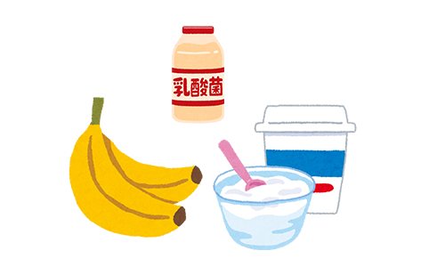

はじめよう、シンバイオティクス
「プロバイオティクス」「プレバイオティクス」という言葉を聞いたことがありませんか？
プロバイオティクスとは、「生きて大腸に届く、有益に働く菌」のこと。
例えば、乳酸菌やビフィズス菌、納豆菌や酪酸菌が挙げられます。
ちなみに…
- 乳酸菌には動物性と植物性のものがあり、植物性のものが強いと言われています。
例えば、みそやしょうゆにも含まれているので、日本人の体質に合うかもしれませんね。 - 酪酸菌はぬか漬けに多く含まれているそうです。
- 納豆菌はとても強い菌ですので、納豆を食べた後に甘酒を作ると甘酒が納豆味になりますよ
プレバイオティクスとは、「消化吸収されずに大腸まで届く食品成分」のこと。
こちらは腸内細菌のいいエサになります。
上で挙げた水溶性食物繊維やオリゴ糖などがこれにあたります。
ちなみに…
- オリゴ糖は大豆や玉ねぎ、バナナなどに多く含まれているそうです。
- 市販のオリゴ糖シロップは砂糖が入っている場合があるので、購入の際は必ず成分を確認しましょう。
もちろん、オリゴ糖のみのものがおすすめです。
ではシンバイオティクスとは？
プロバイオティクスとプレバイオティクス、一緒に摂ることです。
またはその両方を含む飲料や製剤なども指します。
一緒に摂ることで、プロバイオティクスの持つおなかの健康を守るとともに、
からだ本来の力を強める機能が、さらに高められると考えられています。
ちなみに、シンバイオティクスは割とすぐに効果が出すものに出るみたいですよ。
